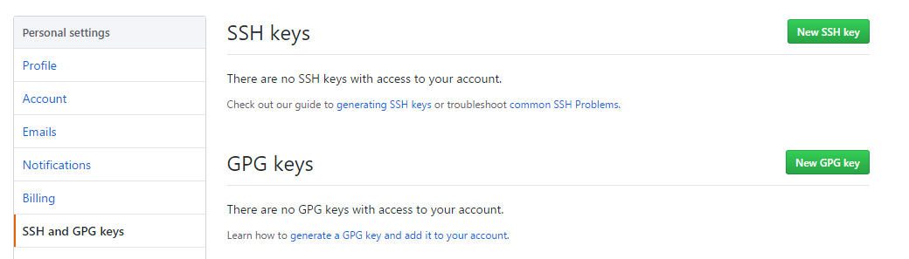

Hexo是一款基于Node.js的静态博客框架，可以deploy到Github上。
优点：
准备工作
安装Node.js
下载相应系统的Node.js
本文选的是windows版本，安装，一路next。
设置环境变量
验证是否安装成功
安装git
没有什么技术含量，传送门
使用npm安装Hexo
npm其实是Node.js的包管理工具
npm已经在Node.js安装的时候顺带装好了
通过命令行查看npm -v
安装Hexo
npm install -g hexo-cli
输入hexo -v，检查hexo是否安装成功
新建一个文件夹 blog 用来存放博客
cd到blog目录，或者在该目录右键打开git命令行窗口
输入hexo init，初始化该文件夹（需要点时间）
输入npm install，安装所需要的组件
启动hexo
输入hexo g，生成hexo静态页面
输入hexo s，开启服务器，访问该网址，正式体验Hexo

如果你能看到hexo默认的hello world网页，恭喜你第一步成功了。
部署到github
如果你要将博客部署到github上，请完成下面的过程：
创建github pages
github官网注册帐号
新建库，名字为 ： xxx.github.io
注意：xxx为你的用户名


配置SSH
生成SSH Key
ssh-keygen -t rsa -C "youremail@example" #将邮箱换成自己的
一路回车之后就生成了自己的SSH Key。
默认保存在用户主目录的.ssh目录下。
.ssh目录下有 id_rsa 和id_rsa.pub 两个文件。
这两个就是SSH Key的秘钥对。id_rsa 是私钥，id_rsa.pub 是公钥。
登录Github，点击头像下的settings，添加ssh

找到之前生成的SSH Key 的公钥 id_rsa.pub
打开id_rsa.pub，将里面的内容添加到key，
title输一个自己喜欢的即可。

输入`ssh -T git@github.com~，测试添加ssh是否成功
配置Deployment
在biog根目录下，打开_config.yml文件，修改repo值（在末尾）
1
2
3
4deploy:
type: git
repo: git@github.com:chenthreetrees/chenthreetrees.github.io.git
branch: master
repo值是你在github项目里的ssh（右下角）

部署
在生成以及部署文章之前，需要安装一个扩展
npm install hexo-deployer-git --save
生成静态页面hexo g
部署hexo d
部署成功后访问你的地址：http://用户名.github.io
绑定域名
设置阿里云CNAME映射
在biog根目录下，找到public目录，即生成的静态页面文件目录，
在该目录下创建一个名为CNAME的文件，注意不需要后缀
重新部署，就可以用你的域名来访问了
更换主题
上面看到的默认主题，可能不是我们喜欢的，
github上有大量的主题可供选择，这里选择使用next主题